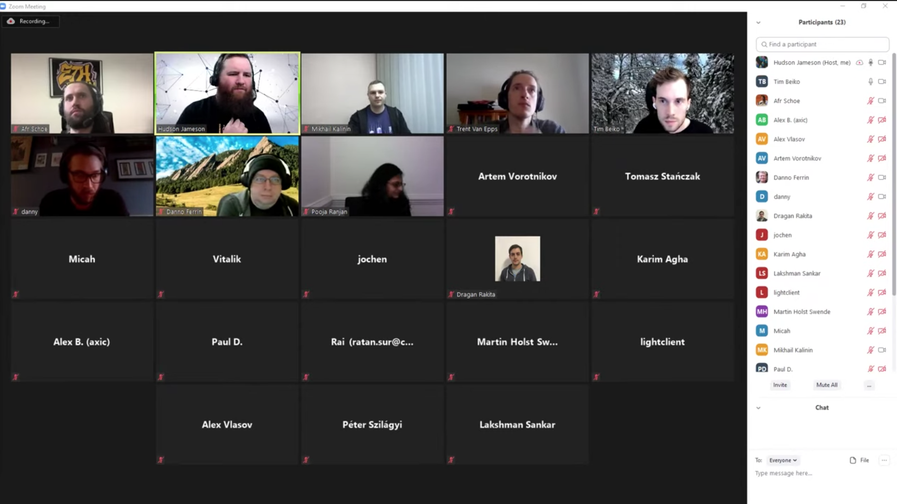

Governance In Ethereum-land
Technical coordination in the Ethereum ecosystem
(plus some history of Internet governance)

Jamie Pitts
http://twitter.com/jamiepitts
What I work on: DevOps and Community Organizing
Technical Standard
A formal document which establishes uniform engineering or technical criteria, methods, processes, and practices.
It takes a lot of coordination for a standard to be adopted!
Ethereum standard in use today: ERC-20

Internet standard in use today: ASCII
Live, open systems are built with technical standards

Usually changes are worked in with minimal disruption
This requires a lot of coordination!
ARPANET
- Originators worked to specify, program, and test the protocols that would run on BBN's nodes
- "RFCs" helped with coordination across long distances
- How did the internet pioneers make decisions?
- How did they deal with the stakeholders?
ARPANET in 1971
ARPANET in 1977

Early Internet Governance Culture
Historical Context
- 1950s: DARPA created to rapidly develop emerging technologies
- Trust was put in the agency in order to enable a culture of innovation, projects like ARPANET were funded
- Attracted great managers and engineers, many were hippies
- 1970s: brain drain to industry (e.g. Xerox PARC -> Adobe)
Early Internet Governance Culture
Key Traits
- Multi-stakeholder goverance
- Open process
- Favoring coordination over control
- Philosophical goal: “free and open Internet”
Early Internet Governance Culture
"We reject: kings, presidents and voting. We believe in: rough consensus and running code."
- David Clark of the IETF
Early Internet Governance Culture
At UCLA, discussions next to the "Interface Message Processor"
Internet Governance - Institutions
Appears messy, but facilitates technical responsibility
- Internet Engineering Task Force (IETF)
- Internet Research Task Force (IRTF)
- Internet Architecture Board (IAB)
- Internet Corporation for Assigned Names and Numbers (ICANN)
- Internet Society (administrative entity)
Internet Governance - Process
Described in RFC-2026
- Decisions are consensus-based
- Email lists and in-person meetings
- Steps include draft -> adoption as a Standard -> publishing
- Extensive process/culture for conflict resolution
Internet Governance - Technical Leadership
How crucial is technical leadership?
Internet Governance - Technical Leadership
Jon Postel
|
- Challenged the US government to let go of its control over DNS via the "DNS Root Re-direction Test"
Before we get into Ethereum gov...
Some Resources to open up
Ethereum Improvement Proposals (EIPs)
üëâ https://eips.ethereum.org/Magicians' Forum
üëâ https://ethereum-magicians.orgCat Herders
üëâ https://www.ethereumcatherders.com
Is standards-building different in Ethereum-land?
"Internet" vs. "Open, Public Blockchains"
- Network Protocols, Data Formats
- Security Concerns
- End-users
- Valuable, live infrastructure
- Philosophical goals
- Navigating power structures
Is Ethereum standards-building different?
- Uncensorable, open network w/ adamant data
- Thousands of users, billions of dollars depend on it working (not different)
- Controversy and drama (not different from IETF drama)
- Long road from proposal, to prototype, to testing, to deployment (not different)
- ETH is Money
Opportunities to contribute
- Open process to "manage the commons"
- Anyone can propose! There is no "membership required"
- Proposals often get expert input
- Documenting previous work, building prototypes, etc. highly appreciated
Standards in constant use today
ERC-20: Specifying a tradeable token
EIP: Ethereum Improvement Proposal
EIPs describe standards for the Ethereum platform, including core protocol specs, client APIs, and contract standards.
ERCs
A type of EIP which describes application-level standards and conventions, including contract standards.
Core EIPs
A type of EIP which requires a consensus fork!
DeFi-related proposals
Like the protocol itself, each DeFi system has a community with its own process, proposals, and culture.
Core Governance: From proposal to mainnet
- Conceptualization / "primordial soup"
- The EIP workflow
- The network upgrade process
Core Governance: EIP workflow
- Goal: create high quality proposals, evaluated by the community
- Sketching out the idea, submitting the document (EIP Editors)
- The proposer seeks competent input (Magicians' Forum)
- The proposer seeks buy-in from stakeholders
Core Governance: EIP workflow
The EIPs are in a git repo!
"Because the EIPs are maintained as text files in a versioned repository, their revision history is the historical record of the feature proposal."
Core Governance: EIP workflow
EIP-1: Process and Template
Start by reading over "EIP-1"!
The Core EIP and upgrade process was recently improved by the Ethereum Cat Herders, however the ERC process remains the same.
Core Governance: network upgrade process
- Goal: maintain a healthy, evolving network
- Cat Herders organize the process
- Hard Fork Coordinators manage the evaluation and scheduling for inclusion in an upgrade
- "core devs" implement the proposals and decide if they should be included in a HF
Core Governance: where it comes together
The "core devs" calls
- Protocol client developers and HF coordinators
- Finding consensus about each proposal
- Open process
- Calls are posted to Youtube
Core Governance: where it comes together
Ethereum Governance Is Widespread
Anything you might be interested probably has governance
(or needs it ASAP!)
- Core protocol
- Scaling solutions
- Wallet-related standards
- Token and smart contract infrastructure
- DeFi systems
- DAOs - systems for on-chain coordination
Ready to propose? Or want to help out?
Join a discussion on
https://ethereum-magicians.org
Don't be shy! We're friendly.
Join in the discussion to learn or to help others

Resources
Ethereum Improvement Proposals (EIPs)
üëâ https://eips.ethereum.org/Magicians' Forum
üëâ https://ethereum-magicians.orgCat Herders
üëâ https://www.ethereumcatherders.com
Jamie
http://twitter.com/jamiepitts
This presentation was built with reveal.js https://github.com/hakimel/reveal.js